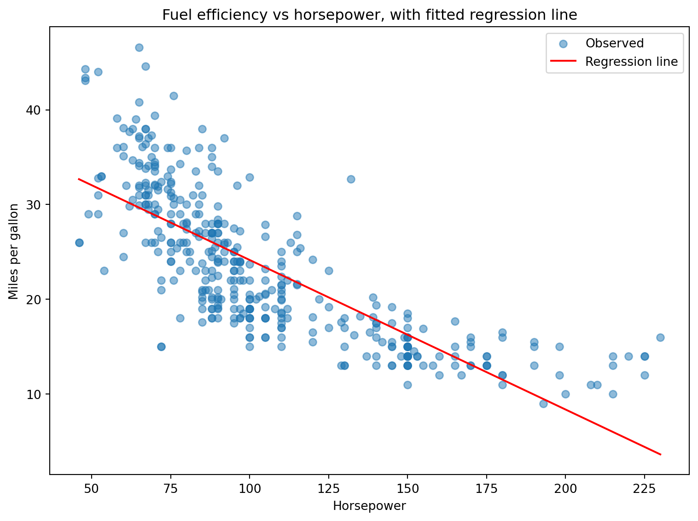
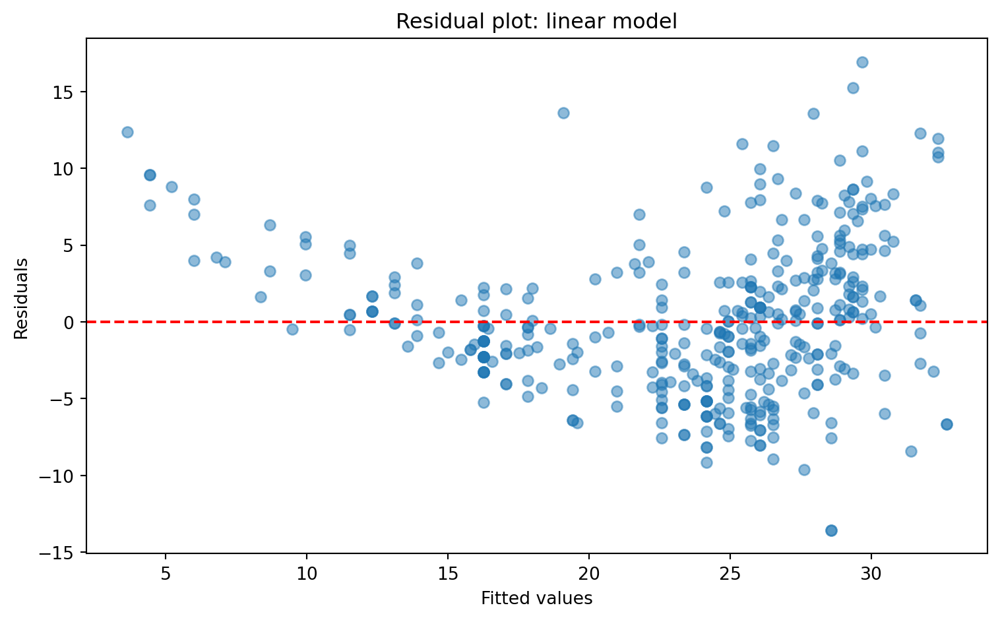

We cover how to extract individual components from a fitted model and how to generate predictions and residuals for plotting and diagnostics.
import pandas as pdimport numpy as npimport matplotlib.pyplot as pltimport statsmodels.formula.api as smfplt.style.use("seaborn-v0_8-whitegrid")gapminder = pd.read_csv("data/gapminder.csv")gap_2007 = gapminder[gapminder["year"] ==2007].copy()gap_2007["log_gdp"] = np.log(gap_2007["gdpPercap"])model = smf.ols("lifeExp ~ log_gdp", data=gap_2007).fit()# --- Key model attributes ---print(model.params) # coefficients as a Seriesprint(model.bse) # standard errors as a Seriesprint(model.tvalues) # t-statistics as a Seriesprint(model.pvalues) # p-values as a Seriesprint(model.rsquared) # R-squared (float)print(model.rsquared_adj) # adjusted R-squared (float)print(model.conf_int()) # 95% confidence intervals as a DataFrame# --- Building a tidy results table manually ---results_table = pd.DataFrame({"coefficient": model.params,"std_error": model.bse,"t_stat": model.tvalues,"p_value": model.pvalues,"ci_low": model.conf_int()[0],"ci_high": model.conf_int()[1],}).round(4)results_table# --- Using summary2() as a shortcut ---tidy_table = model.summary2().tables[1]tidy_table# --- In-sample predictions and residuals ---# Add them directly to the DataFramegap_2007["fitted"] = model.fittedvalues # predicted values for the original datagap_2007["residual"] = model.resid # residuals (observed - predicted)gap_2007.head()# --- Out-of-sample predictions ---# Create a DataFrame with the same column names used in the formulalog_gdp_vals = np.linspace(gap_2007['log_gdp'].min(), gap_2007['log_gdp'].max(), 100)new_data = pd.DataFrame({"log_gdp": log_gdp_vals})new_data["predicted"] = model.predict(new_data)new_data.head()# --- Visualizing the regression line ---fig, ax = plt.subplots()ax.scatter(gap_2007["log_gdp"], gap_2007["lifeExp"], alpha=0.6, label="Observed")ax.plot(new_data["log_gdp"], new_data["predicted"], color="red", label="Regression line")ax.set_xlabel("Log GDP per capita")ax.set_ylabel("Life expectancy")ax.legend()plt.show()plt.close()# --- Residual plot ---fig, ax = plt.subplots()ax.scatter(gap_2007["fitted"], gap_2007["residual"], alpha=0.6)ax.axhline(0, color="red", linestyle="--")ax.set_xlabel("Fitted values")ax.set_ylabel("Residuals")plt.show()plt.close()
Exercises
Exercise 5.2.1
Refit the simple regression from exercise 5.1.1, then practice extracting individual pieces of information from the model object instead of reading everything from .summary().
import seaborn as snsimport statsmodels.formula.api as smfmpg = sns.load_dataset("mpg").dropna(subset=["horsepower"])model = smf.ols("mpg ~ horsepower", data=mpg).fit()
Print model.params. What type of object is this?
Print model.bse, model.tvalues, and model.pvalues. What does each of these represent?
Print model.rsquared. How does this compare to reading the R-squared value off .summary()?
Print model.conf_int(). What type of object is this, and what do the two columns represent?
Using only these attributes (not .summary()), write one line of code that prints just the p-value for the horsepower coefficient.
Solution
import seaborn as snsimport statsmodels.formula.api as smfmpg = sns.load_dataset("mpg").dropna(subset=["horsepower"])model = smf.ols("mpg ~ horsepower", data=mpg).fit()print(model.params)print(model.bse)print(model.tvalues)print(model.pvalues)print(model.rsquared)print(model.conf_int())
# 5. p-value for horsepower onlyprint(model.pvalues["horsepower"])
7.031989029404482e-81
model.params is a pandas Series, indexed by coefficient name (Intercept and horsepower).
model.bse gives the standard error of each coefficient, model.tvalues gives the t-statistic (the coefficient divided by its standard error), and model.pvalues gives the p-value associated with each t-statistic.
model.rsquared returns the exact same R-squared value shown in .summary() (about 0.606), just as a plain float you can use directly in further calculations, rather than a formatted text block.
model.conf_int() returns a DataFrame with one row per coefficient and two unnamed columns (0 and 1), representing the lower and upper bounds of the 95% confidence interval for each coefficient.
Exercise 5.2.2
Build a tidy results table from the model in the previous exercise, first manually and then using a built-in shortcut.
import seaborn as snsimport pandas as pdimport statsmodels.formula.api as smfmpg = sns.load_dataset("mpg").dropna(subset=["horsepower"])model = smf.ols("mpg ~ horsepower", data=mpg).fit()
Build a DataFrame called results_table with columns coefficient, std_error, t_stat, p_value, ci_low, and ci_high, using the model attributes from the previous exercise. Round the result to 4 decimal places.
Now use model.summary2().tables[1] to produce essentially the same table in a single line. Compare the column names and values to your manual version.
Given that .summary2() produces this table automatically, when might it still be worth building the table manually as in step 1?
Solution
import seaborn as snsimport pandas as pdimport statsmodels.formula.api as smfmpg = sns.load_dataset("mpg").dropna(subset=["horsepower"])model = smf.ols("mpg ~ horsepower", data=mpg).fit()# 1. Manual tidy tableresults_table = pd.DataFrame({"coefficient": model.params,"std_error": model.bse,"t_stat": model.tvalues,"p_value": model.pvalues,"ci_low": model.conf_int()[0],"ci_high": model.conf_int()[1],}).round(4)print(results_table)
The values are identical — both tables report the same coefficients, standard errors, t-statistics, p-values, and confidence intervals. The only differences are cosmetic: .summary2() uses its own column names (Coef., Std.Err., and so on) and slightly different formatting.
Building the table manually is worth doing when you want specific column names (for example, to match a report template), want to select or reorder only some of the statistics, or want to combine results from several models into one combined table — something .summary2() alone does not do for you.
Exercise 5.2.3
Add in-sample predictions and residuals to the mpg DataFrame, and use them to find which cars the model over- and under-predicts the most.
import seaborn as snsimport statsmodels.formula.api as smfmpg = sns.load_dataset("mpg").dropna(subset=["horsepower"]).reset_index(drop=True)model = smf.ols("mpg ~ horsepower", data=mpg).fit()
Add two new columns to mpg: fitted, using model.fittedvalues, and residual, using model.resid.
Sort mpg by residual in descending order and print the name, horsepower, mpg, fitted, and residual columns for the top 3 rows. These are the cars whose actual fuel efficiency is highest relative to what the model predicts given their horsepower.
Now sort by residual in ascending order and print the same columns for the bottom 3 rows.
In plain language, what does a large positive residual tell you about a specific car? What might explain why a car outperforms what its horsepoweralone would predict?
Solution
import seaborn as snsimport statsmodels.formula.api as smfmpg = sns.load_dataset("mpg").dropna(subset=["horsepower"]).reset_index(drop=True)model = smf.ols("mpg ~ horsepower", data=mpg).fit()# 1. Add fitted values and residualsmpg["fitted"] = model.fittedvaluesmpg["residual"] = model.resid# 2. Largest positive residualsprint(mpg.sort_values("residual", ascending=False).head(3)[["name", "horsepower", "mpg", "fitted", "residual"]])
# 3. Largest negative residualsprint(mpg.sort_values("residual").head(3)[["name", "horsepower", "mpg", "fitted", "residual"]])
name horsepower mpg fitted residual
153 ford maverick 72.0 15.0 28.571040 -13.571040
152 mercury monarch 72.0 15.0 28.571040 -13.571040
198 ford granada ghia 78.0 18.0 27.623972 -9.623972
A large positive residual means the model substantially under-predicts that car’s actual fuel efficiency — the car does much better than its horsepower alone would suggest. The Mazda GLC and Honda Civic, for example, both have modest horsepower but very high actual mpg, well above what the model predicts — likely because they are also unusually lightweight cars, a factor the model does not account for since it only uses horsepower. This is exactly the motivation for the multiple regression in exercise 5.1.2: adding weight as a second predictor should shrink residuals like these.
Exercise 5.2.4
Use out-of-sample prediction to draw the fitted regression line on top of the observed data.
import seaborn as snsimport numpy as npimport pandas as pdimport statsmodels.formula.api as smfimport matplotlib.pyplot as pltmpg = sns.load_dataset("mpg").dropna(subset=["horsepower"])model = smf.ols("mpg ~ horsepower", data=mpg).fit()
Use np.linspace() to generate 100 evenly spaced values of horsepower between its minimum and maximum in the data.
Build a new DataFrame called new_data with a single column named horsepower, containing the values from step 1. This column name must exactly match the variable name used in the model formula.
Use model.predict(new_data) to generate predicted mpg values for these new horsepower values, and add them to new_data as a column called predicted.
Create a scatter plot of the observed data (mpg vs horsepower, with alpha=0.5 and label="Observed"), and overlay the predicted line from new_data in red with label="Regression line". Add axis labels and a legend.
Solution
import seaborn as snsimport numpy as npimport pandas as pdimport statsmodels.formula.api as smfimport matplotlib.pyplot as pltmpg = sns.load_dataset("mpg").dropna(subset=["horsepower"])model = smf.ols("mpg ~ horsepower", data=mpg).fit()# 1-3. Build new data and predicthp_vals = np.linspace(mpg["horsepower"].min(), mpg["horsepower"].max(), 100)new_data = pd.DataFrame({"horsepower": hp_vals})new_data["predicted"] = model.predict(new_data)print(new_data.head())
# 4. Plot observed data with regression line overlayfig, ax = plt.subplots(figsize=(8, 6))ax.scatter(mpg["horsepower"], mpg["mpg"], alpha=0.5, label="Observed")ax.plot(new_data["horsepower"], new_data["predicted"], color="red", label="Regression line")ax.set_xlabel("Horsepower")ax.set_ylabel("Miles per gallon")ax.set_title("Fuel efficiency vs horsepower, with fitted regression line")ax.legend()plt.tight_layout()plt.show()

The column name in new_data must match horsepower exactly, since model.predict() looks up the formula’s variables by name in whatever DataFrame you pass it — this is the same reason a mismatched or misspelled column name produces a confusing error rather than a silently wrong result.
Exercise 5.2.5
Use a residual plot to check whether the simple linear model from exercise 5.1.1 is missing something, and see whether the quadratic model from exercise 5.1.4 fixes it.
import seaborn as snsimport statsmodels.formula.api as smfimport matplotlib.pyplot as pltmpg = sns.load_dataset("mpg").dropna(subset=["horsepower"])
Fit the simple linear model mpg ~ horsepower. Add fitted and residual columns to mpg using .fittedvalues and .resid.
Create a residual plot: scatter fitted (x-axis) against residual (y-axis), with alpha=0.5, and add a horizontal reference line at 0 using ax.axhline(). A well-fitting model should show residuals scattered randomly around zero with no clear pattern. Does this one?
Fit the quadratic model mpg ~ horsepower + I(horsepower**2) from exercise 5.1.4. Add its own fitted_quad and residual_quad columns, and create the same residual plot for this model.
Compare the two residual plots. Does the pattern from step 2 improve in step 3?
Solution
import seaborn as snsimport statsmodels.formula.api as smfimport matplotlib.pyplot as pltmpg = sns.load_dataset("mpg").dropna(subset=["horsepower"])# 1. Simple linear modelmodel = smf.ols("mpg ~ horsepower", data=mpg).fit()mpg["fitted"] = model.fittedvaluesmpg["residual"] = model.resid# 2. Residual plotfig, ax = plt.subplots(figsize=(8, 5))ax.scatter(mpg["fitted"], mpg["residual"], alpha=0.5)ax.axhline(0, color="red", linestyle="--")ax.set_xlabel("Fitted values")ax.set_ylabel("Residuals")ax.set_title("Residual plot: linear model")plt.tight_layout()plt.show()

The residual plot for the linear model shows a visible curved pattern rather than a random scatter around zero — residuals tend to be positive at both low and high fitted values, and more negative in the middle. This is a classic sign that the model is missing curvature in the true relationship, consistent with what the original scatter plot in exercise 5.1.1 suggested.
The residual plot for the quadratic model looks noticeably more like a random scatter around zero, with the curved pattern from the linear model largely gone. This confirms that adding the squared horsepower term captured most of the non-linearity that the simple linear model was missing.